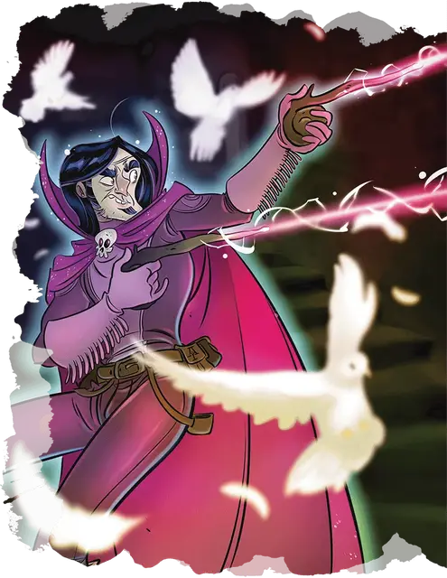

Джим Темномаг
Jim Darkmagic
Средний Гуманоид (Человек), хаотично-нейтральный, именной НИП

Класс Доспеха 12 (15 с доспехом мага)
Хиты 40 (9к8)
Скорость 30 футов
| мод | спас | ||
|---|---|---|---|
| СИЛ | 8 | −1 | −1 |
| ЛОВ | 14 | +2 | +2 |
| ТЕЛ | 10 | +0 | +0 |
| мод | спас | ||
|---|---|---|---|
| ИНТ | 18 | +4 | +7 |
| МДР | 12 | +1 | +4 |
| ХАР | 14 | +2 | +2 |
Навыки Акробатика +5, Выступление +5, История +7, Магия +7, Уход за животными +4
Чувства пассивное Восприятие 11
Языки Общий
Опасность 5 (1800 опыта)
Бонус мастерства +3
Особенности
Особое снаряжение. Джим владеет волшебной палочкой чудес [wand of wonder].
Безопасная транспортировка (перезаряжается после того, как Джим накладывает заклинание школы Вызова 1-го уровня или выше). Бонусным действие Джим телепортируется на расстояние до 30 футов в видимое пространство. Пространство должно быть незанято или занято согласный Маленьким или Средним существом. Если происходит последнее, то Джим и согласное существо оба телепортируются, меняясь местами.
Использование заклинаний. Джим является заклинателем 9-го уровня. Его базовой характеристикой является Интеллект (Сл спасброска от заклинания 15, +7 к попаданию атаками заклинаниями). У него подготовлены следующие заклинания волшебника:
• Заговоры (неограниченно): огненный снаряд [fire bolt], дружба [friends], волшебная рука [mage hand], малая иллюзия [minor illusion], фокусы [prestidigitation];
• 1 уровень (4 ячейки): маскировка [disguise self], волшебная стрела Джима [jims magic missile], доспехи мага [mage armor];
• 2 уровень (3 ячейки): невидимость [invisibility], сверкающая монета Джима [jims glowing coin];
• 3 уровень (3 ячейки): спровоцированная жадность [incite greed], огненный шар [fireball];
• 4 уровень (3 ячейки): призыв малых элементалей [conjure minor elementals], превращение [polymorph];.
• 5 уровень (1 ячейки): фальшивый двойник [mislead].
Действия
Кинжал. . Рукопашная или дальнобойная атака оружием: +5 к попаданию, досягаемость 5 футов или дистанция 20/60 футов, одна цель. Попадание: 4 (1к4 + 2) колющего урона.
Малый призыв. Джим призывает неодушевленный предмет, размером не более 3 футов с каждой стороны и весом не более 10 фунтов, в своей руке или на земле в свободном пространстве, которое он может видеть в пределах 10 футов. Предмет явно магический, излучающий тусклый свет на расстояние до 5 футов. Он исчезает, если получает какой-либо урон, через 1 час или когда Джим снова использует эту особенность.
Описание
“Желаю вам волшебного дня!”
Джеймс Уинифрид Темномаг III - отпрыск таинственной мультипланарной волшебной семьи. Тайная родословная Джима давно предшествовала ему, включая в себя столь же здоровое количество магических тренировок и врожденное сверхъестественное мастерство. Однако, несмотря на природный талант, который мог бы позволить ему сделать себе имя в качестве придворного волшебника или, возможно, "того странного старика в деревне", первоначальная страсть Джима была не к магии свитков или заклинаний, а к сцене.
Как артиста и постановщика "Опытов Джима Темномага", легендарного мага часто можно встретить на рынках и городских площадях, совершающего подвиги мирской магии. Известность, которую он заработал за эти подвиги, почти сравнима с репутацией, которая следует за ним как за главным магом (а иногда и поджигателем) компании Acquisitions Incorporated. И хотя его навыки искателя приключений и настоящего волшебника остаются высоко востребованными, Джим с нетерпением ждёт заслуженной пенсии, после чего он надеется стать "настоящим волшебником" - под которым он подразумевает липового волшебника - на полный рабочий день.